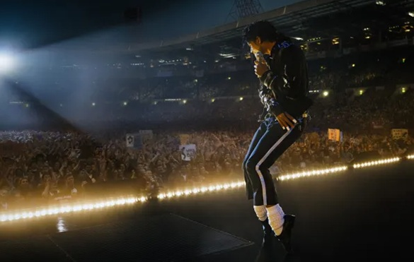
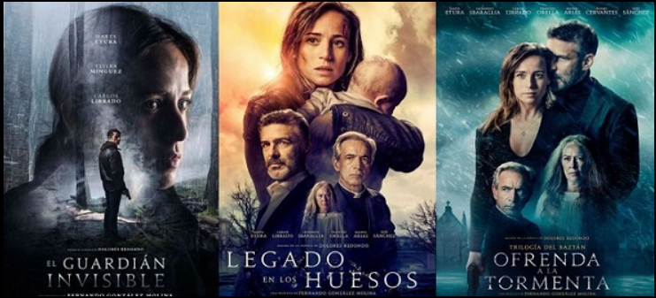
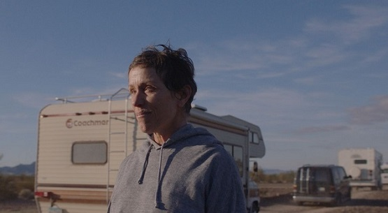

Ultra Filmes — As melhores indicações para o seu fim de semana!
Resenha: Michael ()

Michael () — dir. John Doe
Michael é um filme de drama dirigido por John Doe. O filme conta a história de Michael,
um homem que descobre um segredo que mudará sua vida para sempre. Com atuações memoráveis de
Jane Smith e Bob Johnson, o filme é uma obra-prima que explora temas como poder, lealdade e traição.
Resenha: Trilogia Baztán ()

Trilogia Baztán () — dir. Juan Carlos Fresnadillo
Trilogia Baztán é uma série de três filmes espanhóis de suspense policial, com elementos de
fantasia.
Os filmes são conhecidos por sua narrativa complexa e personagens bem desenvolvidos.
Resenha: Nomadland ()

Nomadland () — dir. Chloé Zhao
Nomadland é um filme de drama dirigido por Chloé Zhao. O filme conta a história de uma
mulher
que, após perder sua casa e seu emprego, decide viver como nômade, viajando pelo oeste dos Estados
Unidos. Com atuações memoráveis de Frances McDormand e David Strathairn, o filme é uma obra-prima
que explora temas como identidade, pertencimento e a busca por significado em um mundo em constante
mudança.